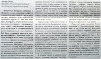
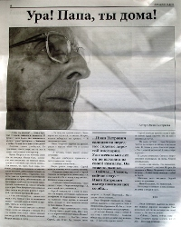

| Для души и духа |
| На похоронах Стива Почуйко 2 декабря 2011 ко мне подошёл Юра С. и предложил поучавствовать в финансировании газеты с условием что наш адрес там будет помещён. Юра дал мне несколько экземпляров газеты, а я ему обещал поднять этот вопрос на нашем собрании. В субботу 10 декабря Юра снова мне позвонил и спросил о решении. В воскресенье 11 декабря я на проповеди с темой "Не хочу" предложил нашему собранию принять предложение Юры и после некоторых колебаний было решено участвовать в этом проекте. Выделели 100д, конечно это очень мало, но я надеюсь, что со временем мы сможем внести больший вклад в это очень нужное дело. В 15ч. я позвонил Юре и сказал об этом. Вот эта газета: |
| Первая статья на три листа "Уроки лондонских погромов", написанная адвокатом Алексом Спак, безусловна ставит на обсуждение очень важную тему взаимоотношений подрастающего поколения с обществом. |  1 |
2 |
3 |
Статья неплохая с точки зрения адвоката-христианина, который просто обязан осудить любой мятеж против власти.
Однако, здесь не обошлось без штампов, которые совершенно не приемлимы для грамотного человека. Так например, автор утверждает: " Идеи светского либерализма начали давать первые ростки. Если детей в школах учат, что Бога нет, человек произошёл от обезьяны, нет значительной разницы между животным и человеком - то никого не должно удивлять, что рано или поздно дети начнут вести себя как животные." И ещё: "Светские ценности "равенства" и "прав человека" только подливали масла в огонь. |
| После этого можно подумать, что автор призывает пересмотреть современные научные теории в пользу домыслов мрачного средневековья. Наука не имеет никакого отношения к моральному состоянию общества. скорее в этом как раз повинны проповедники христианства не могущие предложить решения современных проблем, возникших в результате развития цивилизации общества потребления. Впрочем, это тема другого уровня. В целом автор очень хорошо показал дикость мятежа без цели, без идеологии и веры в что-то конструктивное. Мы можем вспомнить движение хиппи, которое возникло, как протест против вьетнамской войны в частности, а вообщем сама война следствие политико-экономического кризиса. Прошло почти 50 лет и ситуация в мире вновь нестабильна, а молодёжь чувствует это своей "кожей", но не может найти причины этого. Потому и бунт бессмысленный и жестокий. К сожаление, всё ещё впереди. |
| Четвёртая страница полностью посвящена детям с очень нужной статьёй для родителей: "как правильно воспитать ребёнка".
Для меня с одной стороны был неожиданным вывод автора: "поставить брак, взаимоотношения родителей, их взаимную любовь на первое место, а уже потом заботу о воспитании ребёнка". Ранее всегда подчёркивалась линия на первостепенность в браке воспитания детей, но если понять и принять то, что дети в своей основе "повторяшки", т.е практически всегда в своём поведении копируют внешний мир, то всё становится на свои места. |
4 |
|  | Целый разворот, 6-я и 7-я страницы газеты занял довольно розовый рассказ "Ура! Папа, ты дома!" автора Олеси Дмитриевой. Очень душещипательный и с правильной концовкой. Тема безусловно актуальная, но уж очень прямо и в лоб, да ещё конец счастливый! В моей молодости был сокурсник в университете Саня Х., так вот он писал подобные рассказы и женские журналы его охотно печатали. Сейчас он на пенсии и последнее его место работы - проректор по АХЧ университета (не буду писать какого!). |
| Надо отметить, что газета получилась интересная и информативная. Маленький размер страниц не помешал затронуть жизненно важные проблемя с христианской позиции. Я прошу извинить меня за низкое качество фотографий газеты (в мой сканер она не влазила), но у меня был сильно помятый экземпляр и, кроме того, я очень торопился сделать этот обзор по "горячим следам". К сожадению, знаю свой недостаток: если откладываю на завтра, то это значит навсегда! |
{kind=link}
{kind=link}
{kind=link}
{kind=link}
{kind=link}
{kind=link}
{kind=link}
{kind=link}
{kind=link}
{kind=link}
{kind=link}
{kind=link}